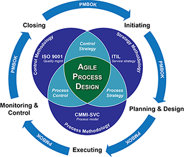
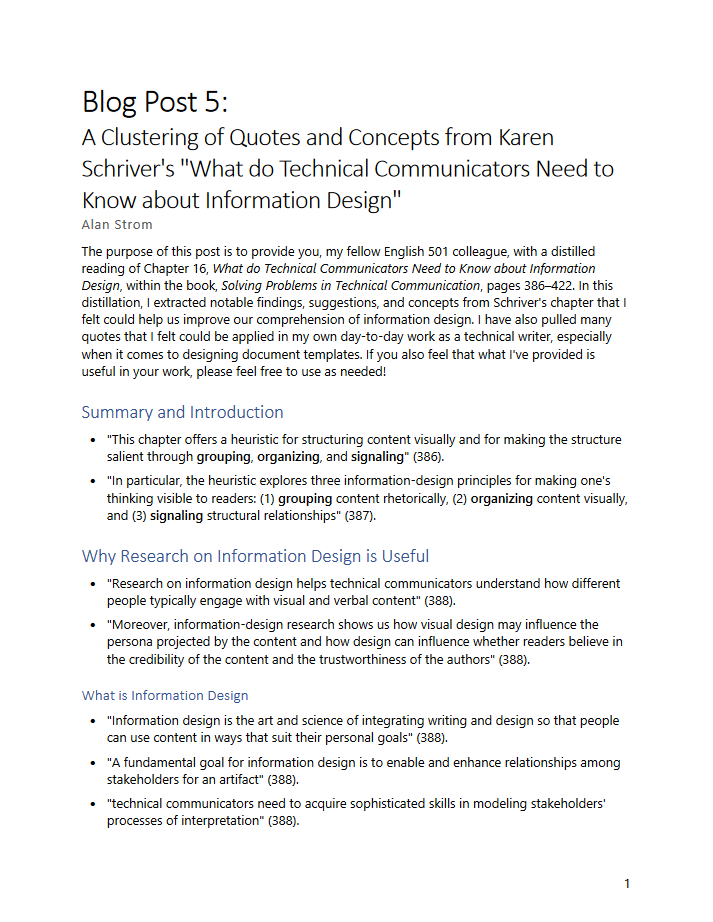
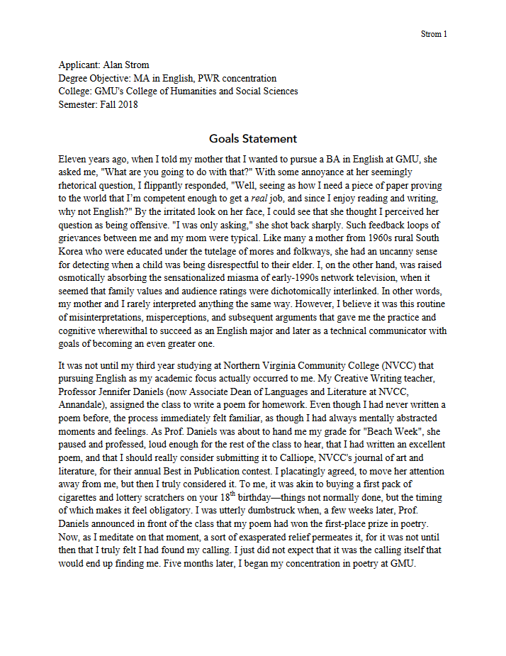
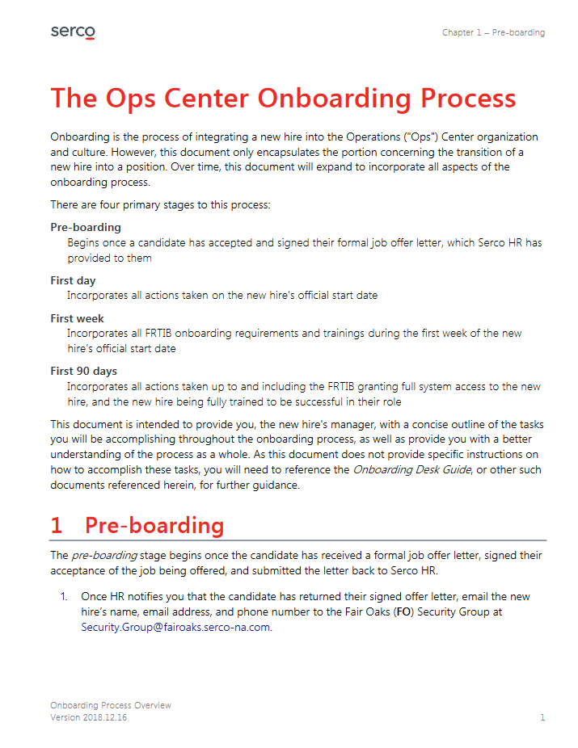

This is a diagram that I was consulted to help create as part of a proposal, in 2013. The verbiage and general ideas were communicated to me, and it was my job to translate everything into a graphic. This diagram illustrates my ability to synthesize complex concepts into a digestible image.
This is one of many administrative forms I have created. In 2015, I was requested to help create a form that would help the supervisors on my contract to communicate requirements for new personnel to the contract's IT team. Upon gathering the communication requirements, I laid the form out according to user and information importance. It is a clear example of my understanding for user-focused document design practices.
In GMU's Introduction to PWR graduate course, we were tasked with writing blog posts about our thoughts and findings from our assigned readings. This is one of seven blog posts, wherein I condensed the core concepts of one of our readings into a sort-of "Cliffs Notes" for others in my class. My intention was to create something that would allow me and my colleagues to easily reference back to important parts of the reading.
This is the statement I submitted in early 2018 as part of my application to be accepted into GMU's English MA program in professional writing and rhetoric (PWR). It shares the story of why I feel that my calling is in technical communication.
This is one of many company newsletters that I helped publish for Paragon Systems, Inc. It demonstrates my desktop publishing skills in MS Publisher and my ability to write concise content for a general audience.
This is an example of one of the many internal desk guides I've created. This one was made in Q4 2018 and is intended to provide supervisors with an overview of the contract's onboarding process. It is also a precursor to a series of more in-depth desk guides that expand off of this document's primary topics and exemplifies my ability to create reader-focused technical documentation.
{kind=link}